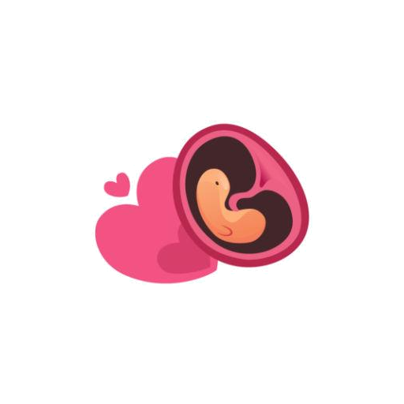

今天 12月21日

孕早期
蓝莓大小的胚胎
本周宝宝正在快速发育
顶臀长
1.4cm
体重
1.3g
距预产期
231天
宝宝发育
妈妈变化
全能工具
体重记录
产检表
数胎动
能不能吃
音乐天地
孕期日历
待产包
产检提醒
饮食方案
全景导览
产检表 · B超工具箱
把常用 B 超数据录进去，可估算胎儿体重、查看指标含义，并保存每次 B 超单，方便和医生沟通。
提示：胎儿体重估算采用常见 Hadlock BPD+HC+AC+FL 公式，B 超本身存在误差；结果仅作记录参考，诊断请以产检医生意见为准。
🤰 孕24周+3天
💓 孕12周提示
数胎动记录器
一般从孕28周左右开始规律数胎动；孕周较早时胎动感受可能不稳定，先以休息、观察和产检建议为准。
本次 1 小时胎动次数
0
选择宝宝较活跃的时段，安静坐下或左侧卧后开始记录。
计时
00:00
建议目标
≥3次
今日累计
0
孕28周后，常用方法是每天固定时段数1小时；若1小时少于3次，可休息、进食后再数一次，仍明显减少或和平时差异很大，请及时联系医生。
最近记录
真实记录建议
🗓 开始时间
多数孕妈从28周起规律数胎动；高危妊娠请按医生要求提前或增加频率。
⏱ 常用标准
1小时达到3次及以上通常较安心；12小时累计常参考30次及以上。
🤲 怎么算一次
连续滚动、踢动可算一次活动；短时间内一连串动作不要机械拆成很多次。
🚨 何时就医
胎动突然明显减少、消失，或与平日规律差异很大，应尽快咨询医生。
本工具将记录保存在当前浏览器 localStorage 中，不上传数据；它只能辅助记录，不能替代产检、胎心监护或医生判断。
音乐天地模块加载中...
孕期护理建议
营养重点
👨
准爸爸任务
陪伴是最长情的告白
孕妇护肤
孕妇装
营养品
孕妇枕
孕妈App
育儿书
🥗 孕周饮食方案
按孕周生成营养重点、食材清单和一日餐单
孕期营养
正在生成饮食建议
主线
-
重点营养
-
饮食节奏
-
提示：本模块依据公开孕期膳食指南整理，用于日常饮食参考；妊娠糖尿病、贫血、甲状腺疾病、高血压、肾病、过敏或医生已给出医嘱时，请以产科医生/营养门诊建议为准。
⏰ 产检提醒
按孕周生成产检节点，自动计算下一次检查
当前孕周
-
已完成
-
待进行
-
🔔 提醒设置
提前 7 天提醒
适合需要提前预约 NT、大排畸、糖耐等项目。
提前 1 天提醒
用于确认资料、空腹要求、B超预约和出行安排。
浏览器本地通知
点击开启后会请求通知权限；实际提醒依赖浏览器支持。
🧾 产检时间表
说明：产检节点按常见孕期保健流程生成，用于日程提醒；不同医院、地区和个人风险情况会调整检查项目。若出现腹痛、阴道出血/流液、胎动明显减少、血压异常、严重头痛眼花等情况，不要等待提醒，请及时就医。
体重历史记录
食物分类
五谷杂粮
蔬菜菌类
肉蛋类
水产海鲜
水果类
坚果类
加工食品
零食饮品
调味补品
豆制品
奶制品
饮品
大家都在关注
待产包
智能清单
准备进度
已准备 0 件 / 共 0 件
物品详情